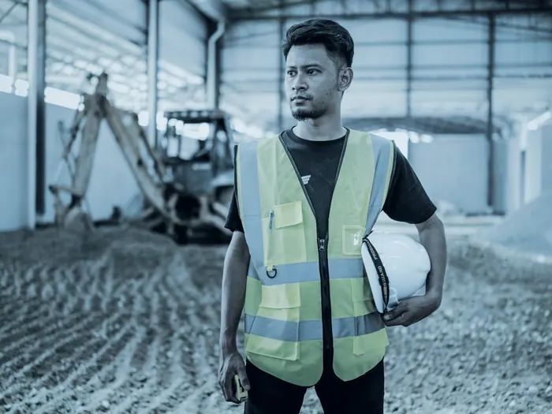

Inicio / Rastreo de personas
Asegurá a tus trabajadores en todo momento.
En muchas industrias los empleados trabajan sin supervisión, en ambientes que exigen mayor esfuerzo físico o jornadas extensas. En la mayoría de esos casos su seguridad personal queda expuesta, y eso no solo baja la productividad: aumenta la responsabilidad de la empresa.
A quiénes protege
Trabajadores que pasan el día fuera del alcance de la vista
- Empleados independientes
- Personal que trabaja fuera de las oficinas: transporte, pintura, decoración, trabajos eléctricos y reparaciones
- Personas que trabajan fuera del horario de oficina, como seguridad o limpieza nocturna
- Trabajadores móviles, como vendedores que están solos gran parte de la jornada
- Personas que trabajan desde su casa
La responsabilidad del empleador no se delega
Proteger la salud y la seguridad de todos los trabajadores es obligación de la empresa. En muchas ocasiones no es posible supervisar continuamente a cada persona, pero comunicarse con ellas y monitorear sus condiciones y prácticas de trabajo resulta de vital importancia para reducir los riesgos asociados.
El rastreador GPS de Satelital Oeste permite que la ubicación del personal esté monitoreada de manera continua y que se envíe un mensaje cuando el trabajador regresó a salvo de su jornada. Ante cualquier eventualidad, el dispositivo envía automáticamente una alarma a la base, o el propio trabajador puede presionar un botón para dispararla. Los dispositivos también avisan cuando detectan un período largo de inactividad.
Otros usos
El mismo equipo, otras necesidades
Por su tamaño y su batería, el rastreador de personas también se aplica a la localización de mascotas y como señuelo dentro de la carga.
Pedí tu cotización
Poné a tu gente en el mapa.
Contanos cuántas personas trabajan fuera de la oficina y en qué condiciones. Te asesoramos sobre el equipo que corresponde.
Canales directos
Hablá con alguien ahora
- SucursalBuenos Aires
- SucursalCórdoba